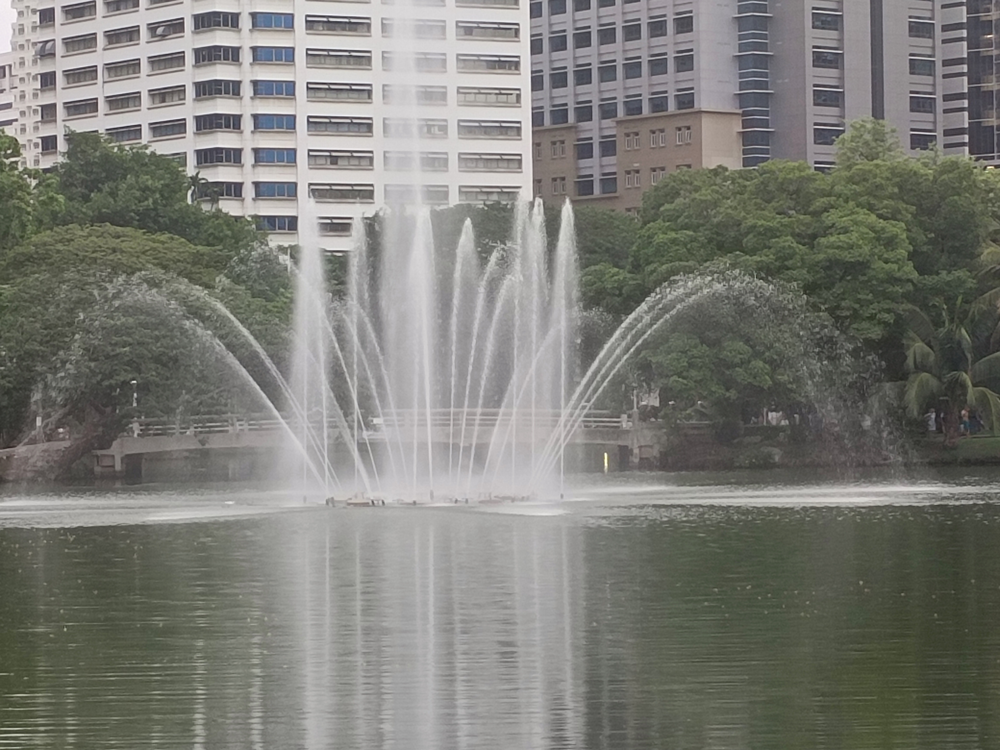
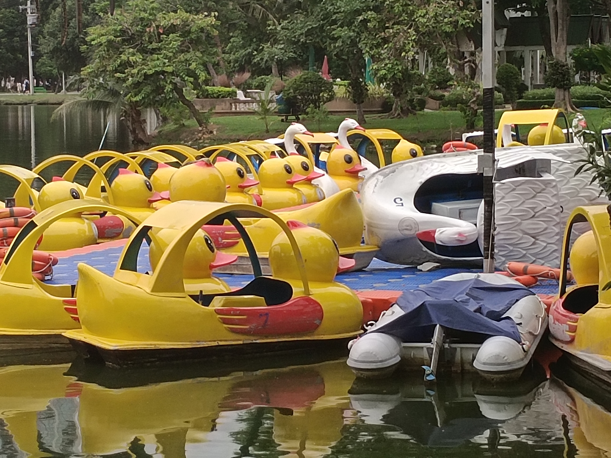

ประวัติสวนลุมพินี
“สวนลุมพินี” เกิดขึ้นในเมืองไทยโดย พระบาทสมเด็จพระมงกุฎเกล้าเจ้าอยู่หัว รัชกาลที่ 6 ทรงริเริ่มสร้างขึ้นกลางทุ่งศาลาแดงด้วยอาณาบริเวณ 360 ไร่ มุ่งหมายจะให้เป็นสถานที่พักผ่อนหย่อนใจ
รวมถึงรองรับงานจัดแสดงสินค้าและมหรสพ “สยามรัฐพิพิธภัณฑ์” ในปี พ.ศ. 2468 ทว่าโครงการสร้างสวนแห่งนี้มีอันหยุดชะงักลงทั้งๆ ที่ยังสร้างไม่เสร็จสิ้นดี
สืบเนื่องจากในหลวงรัชกาลที่ 6 เสด็จสวรรคตเมื่อวันที่ 25 พฤศจิกายน พ.ศ. 2468
King Rama VI Monument (King Vajiravudh)
รูปปั้นขนาดใหญ่ของรัชกาลที่ 6 ตั้งอยู่ที่ปากทางเข้าสวนลุมพินี
(ปล.เนื่องจากสวนทำการปรับปรุงพื้นที่จึงทำให้เข้าไปถ่ายข้างหน้ารูปปั้นไม่ได้ครับ)
ห้องสมุดเพื่อการเรียนรู้สวนลุมพินี
View



สนามเด็กเล่น

เรือเป็ด

เต้นแอโรบิค